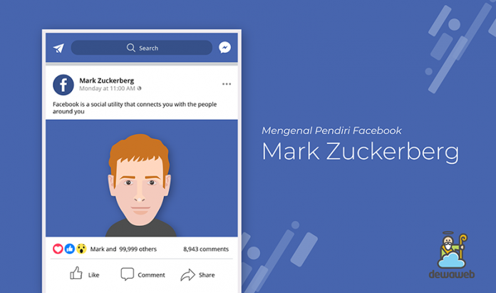
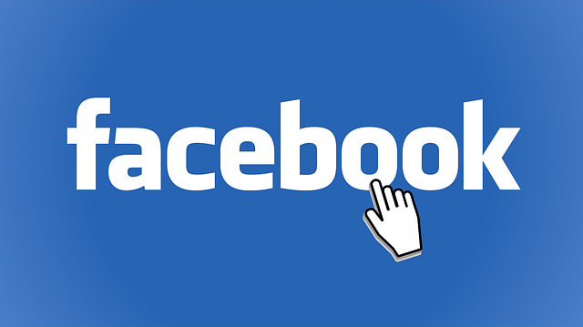

Mengenal Pendiri Facebook, Mark Zuckerberg
Telah 15 tahun lamanya Facebook berkembang di antara berbagai jaringan media sosial (disingkat medsos) lainnya. Bahkan menurut data dari Statista.com, jumlah penggunaan Facebook kini bahkan telah mencapai angka 2 miliar pengguna aktif setiap bulannya. Apakah Anda termasuk dalam jajaran pengguna aktifnya? Jika ya, mungkin Anda ingin tahu siapa sosok jenius dibalik kesuksesan medsos ternama satu ini. Mari kenali siapa pendiri Facebook dan bagaimana ia mengembangkannya!
Siapa Pendiri Facebook?
Pendiri Facebook adalah sebenarnya 5 orang sekawan yaitu Mark Zuckerberg, Eduardo Saverin, Andrew McCollum, Dustin Moskovitz dan Chris Hughes. Namun seiring dengan berkembang Facebook, Nama Zuckerberg lebih dikenal.
Zuckerberg lahir dengan nama lengkap Mark Elliot Zuckerberg. Ia lahir di daerah Westchester Country di New York City, Amerika Serikat. Zuckerberg merupakan anak dari seorang dokter gigi bernama Edward Zuckerberg dan juga seorang psikiater bernama Karen Kempner.
Zuckerberg sebenarnya merupakan anak kedua dari empat bersaudara. Dari masa kecilnya, anak ini memang suka sekali mengutak-atik perangkat komputer yang ia miliki dan selalu penasaran untuk mencoba berbagai perangkat lunak atau program di komputer miliknya. Ia pun mencoba beberapa kali untuk membuat program tersebut.
Edward, ayahnyalah yang memberikan komputer pada anaknya sejak anak itu masih berusia 8 tahun. Hingga pada saat Zuckerberg sekolah di tingkat Sekolah Menengah Atas (SMA), tepatnya di Phillips Exeter Academy, ia bersama temannya si D’Angelo mencoba membuat plug-in bagi MP3 player Winamp.
Plugin itu sendiri merupakan suatu program komputer yang bisa interaksi atau terintegrasi dengan aplikasi host semacam browser dari web atau juga email bagi keperluan terkait tertentu. Zuckerberg dan kawannya ini membuat plug-in itu supaya orang yang suka dengan berbagai macam musik bisa dihimpun dan mereka bisa bikin playlist lagu mereka sendiri sesuai selera. Tak lagi seperti masa sebelumnya di mana orang harus merekam ulang semua lagu dan mengurutkannya secara manual.
Mereka akhirnya kirimkan program ciptaan mereka itu ke beberapa perusahaan terkait semacam AOL (American Online) dan bahkan ke Microsoft. Lalu di akhir tahun SMA mereka, mereka akhirnya direkrut oleh kedua perusahaan besar tersebut untuk menjalankan suatu proyek.
Ketika mereka harus lanjutkan ke jenjang perguruan tinggi untuk berkuliah, akhirnya mereka musti berpisah. D’Angelo kawannya masuk ke Caltech. Sementara itu, si Zuckerberg berhasil masuk Harvard (Universitas top, biasa disebut sebagai Ivy League University di Amerika Serikat). Di Harvard inilah akhirnya Zuckerberg berkonsentrasi untuk mengembangkan ide/gagasan hadirnya Facebook. Seperti apa proses perkembangannya? Marik simak lebih lanjut penjelasan berikut ini!
Sejarah Perkembangan Facebook
Di masa kuliahnya itulah si Zuckerberg punya ide yang cemerlang untuk membuat sebuah buku direktori bagi semua mahasiswa secara online. Ia merasa itu penting karena di universitasnya tidak ada pembagian face book (semacam buku perkenalan antara mahasiswa baru dimana ada foto dan data diri setiap mahasiswa yang kuliah di Harvard).
Tapi, setiap ia mencoba menawarkan dirinya untuk membuat ide itu jadi nyata, pihak Harvard menolak mentah-mentah. Seperti dikutip dari perkataan Zuckerberg, “Mereka bilang ada alasan khusus untuk tidak mengumpulkan info terkait mahasiswa ini”.
Walaupun idenya itu ditolak oleh kampus berkali-kali, ia terus mencari cara supaya bisa tetap mengerjakannya. Zuckerberg mengatakan, “Saya ingin kasih lihat kalau hal itu tidak mustahil untuk diwujudkan”. Jadi, intinya dia ngotot sekali untuk membuat direktori mahasiswa itu.
Nah, proyek pertama yang ia buat bernama CourseMatch (coursematch.com). Proyek ini bisa memungkinkan kawan-kawan kampusnya yang sekelas untuk bisa saling berkomunikasi satu dengan yang lain pada satu website tersebut.
Lalu, ia melanjutkan realisasi gagasannya soal facebook. Ia berhasil membuat Facebook . Website yang sau ini ia rilis di bulan Februari 2004. Facebook ini adalah penyempurnaan dari yang sebelumnya ia buat dengan nama Facemash. Sebenarnya sasaran penggunaannya sama saja, yaitu supaya mahasiswa Harvard semuanya bisa bertemu di satu situs.
Facebook ini diharapkan bisa mempertemukan orang-orang secara cepat dan tanpa batasan jarak seperti pertemuan langsung umumnya. Facebook akhirnya bisa juga dimanfaatkan untuk menemui anggota keluarga, alumni kampus lama dan lain sebagainya di satu website.
Setidaknya ada sekitar 140 aplikasi atau fitur tambahan yang ditambahkan oleh Facebook setiap harinya. Tak hanya itu, sebesar 95% penggunanya sudah memakai setidaknya satu jenis aplikasi yang disediakan.
Tujuan dari banyaknya aplikasi itu adalah membuat suatu perbedaan dibanding dengan website jejaring medsos yang lainnya. Jadi, orang beramai-ramai beralih dari aplikasi semacam MySpace ke Facebook ciptaan Zuckerberg ini.
Kini Facebook bisa dipakai oleh siapapun dimanapun termasuk Anda. Facebook Indonesia juga hadir dalam bahasa Indonesia. Jika Anda belum memilikinya, Anda bisa langsung buka Facebook (fb) dan masuk fb tersebut dengan mendaftarkan diri Anda.